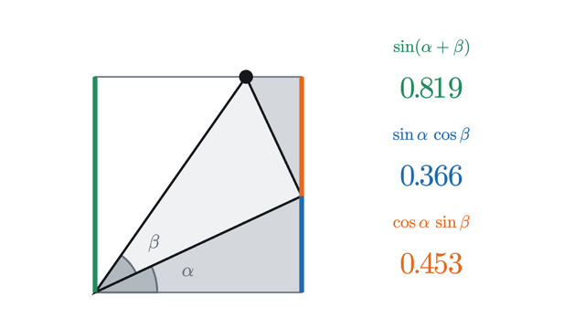

Trigonometry
Sine and cosine as coordinates on a circle, and everything that follows.
Everything here starts from one definition: sine and cosine are the coordinates of a point on the unit circle. The first three lessons set that up, with radians and the Pythagorean identity. The angle addition formulas and the laws of sines and cosines are then derived from it, and the last lesson reads a sine wave as that point moving.
Start with lesson 1-
1
The unit circle: sine and cosine as coordinatesSine and cosine start as ratios in a right triangle, which stops at 90°. Placing the triangle in a circle of radius 1 extends them to every angle.

-
2
Radians: measuring an angle by the arc it cutsA radian is the angle whose arc is as long as the radius. With it, arc length, sector area and the rule sin θ ≈ θ need no conversion constants.

-
3
Pythagorean identity: why sin² + cos² = 1The identity sin²θ + cos²θ = 1 is the Pythagorean theorem on the unit circle. Tangent and secant are lengths in the same picture and give two more.

-
4
Angle addition formulas: sin(a + b) from one pictureThe sine of a sum is not the sum of the sines. Two stacked right triangles show what it is, and a rotated chord proves the formulas for every angle.

-
5
Law of cosines and law of sines: solving any triangleThe law of cosines is the Pythagorean theorem corrected for angles other than 90°. With the law of sines it solves any triangle, two-answer case included.

-
6
Sine waves: amplitude, frequency and phaseA sine wave is the height of a point on a turning wheel. Amplitude, frequency and phase change the wheel, and explain how two waves add, cancel or beat.